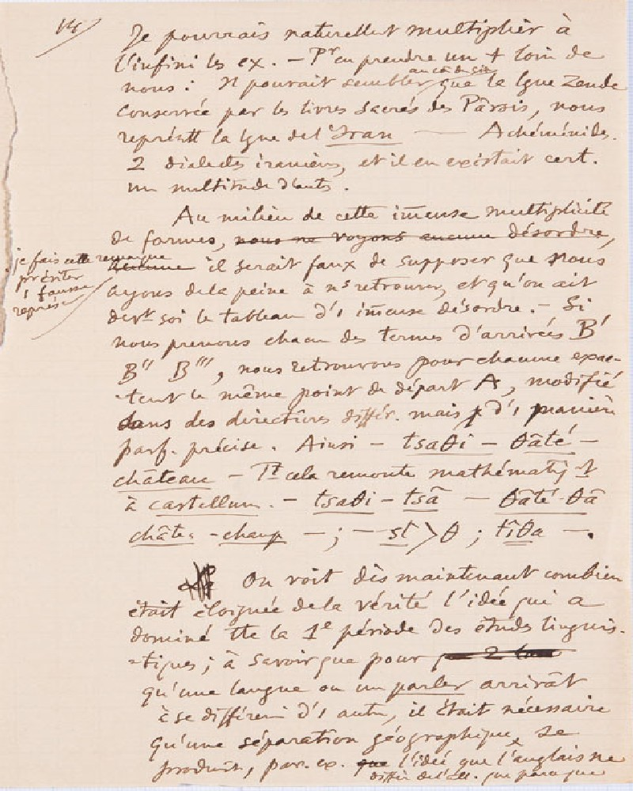

Trois premières conférences à l'Université (cours d'ouverture, novembre 1891)Edizione digitale
AUTORE
Ferdinand de Saussure
CONSERVAZIONE
questi manoscritti sono conservati presso la Biblioteca di Ginevra.
Si tratta di un'opera ad accesso libero della collezione Archives Ferdinand de Saussure
, con identificativo BGE Ms. fr. 3951/1.1-3
SUPPORTO FISICO
il supporto utilizzato sono dei
fogli di
carta
DESCRIZIONE
Le pagine contengono tra le 25 e le 30 righe scritte a mano.
E' assente qualunque tipo di linea stampata nella pagina
STORIA
Questo manoscritto si compone di 3 parti, ognuna corrispondente a una prolusione ginevrina.
Appunti scritti da Ferdinand De Saussure
che vennero in parte utilizzati per le prime tre lezioni del corso di Phonétique du
grec et du latin
del
6 novembre 1891
, del
10 novembre 1891
e del
13 novembre 1891
presso l'Università di
Ginevra.
Probabilmente erano destinati alla pubblicazione di una brochure.
Acquisito dalla Biblioteca di Ginevra tra il 1955 e il 1988.
LINGUA ORIGINALE
Francese
Informazioni sulla codifica
Edizione digitale realizzata nel
settembre 2022
Trascritto da:
Simon
Bouquet
Rudolf
Engler
Tradotto dal francese all'italiano da:
Emanuele
Fadda
Progetto universitario gestito da:
Angelo Mario Del Grosso
Codificato da:
Aurora
Baroni
LEGENDA ELEMENTI
elementi Terminologici: GIALLO
Abbreviazioni: ARANCIONE
Eventi databili: VERDE
Aggiunte: BLU
Glottonimi: MARRONE
Correzioni: ROSSO
Cancellazioni
pagina 14

Trascrizione francese
14
Je pourrais naturellement multiplier à
l’infini les
[ex.]
exemples.
Pour en prendre un
[+]
plus loin de
nous : il pouvait sembler au commencement du siècle que la langue zende
conservée par les livres sacrés des Pârsis , nous
représentât la langue de l’Iran - Achéménides.
[2]
deux dialectes iraniens, et il en existait
[cert.]
ainement
une multitude d’autres.
Au milieu de cette immense multiplicité
de formes, nous ne vojons aucunne desordre,je fais cette remarque pour éviter une fausse fausse représentation,
arcunne il serait faux de supposer que nous
ayons de la peine à nous retrouver, et qu’on ait
devant soi le tableau d’
[i]
unimmense désordre.
Si
nous prenons chacun des termes d'arrivée B'
B'' B''', nous retrouvons pour chacune exac-
tement le même point de départ A, modifié
dans des directions
[differ]
differentes, mais d’
[i.]
une manière
[parf.]
aitement précise.
Ainsi - tsaθi - θãté -
château
Tout cela remonte mathématiquement
à castellum: - tsatθi - tsã - θãté – θã,
château, champ;: - st > θ ;:tîθa.
La On voit dès maintenant combien
était éloignée de la vérité l'idée qui a
dominé toute la 1premièrepériode des études linguistiques.
tiques ; à savoir que, pour
qu’une langue ou un parler arrivât
à se différencier d’
[i]
une autre, il était nécessaire
qu’une séparationgéographique, se
produisît,
[par.]
[ex.]
emplequel’idée que l’anglais ne
ne diffère de l’
[all.]
allemand que parce que [ ]
Glossario
Esempio: Fatto particolare che serve a illustrare un’affermazione generica, a dare
evidenza a un principio teorico.
Lingua zenda: La lingua avestica (obsoleto: lingua Zenda, Zendo) è stata una lingua
iranica nord-orientale, appartenente alla famiglia linguistica indoeuropea oggi
conosciuta come la lingua liturgica dello Zoroastrismo, in particolare come lingua
dell'Avesta, il libro sacro di questa religione, da cui deriva il
nome. Questa lingua deve essere stata, in un periodo storico non precisabile, anche
una lingua parlata. Il fatto di essere la lingua di un'opera sacra
le ha garantito un lungo periodo di uso come lingua scritta, ovvero per la composizione
di altre opere e come lingua scritta ha continuato a essere
utilizzata per molti anni ancora, a partire dal momento in cui cessò di essere una
lingua parlata.
Libro sacro: La scrittura sacra che è a fondamento di una religione, e per antonomasia,
nella religione cristiana, la Bibbia.
Lingua: Sistema di suoni articolati distintivi e significanti (fonemi), di elementi
lessicali, cioè parole e locuzioni (lessemi e sintagmi), e di forme
grammaticali (morfemi), accettato e usato da una comunità etnica, politica o culturale
come mezzo di comunicazione per l’espressione e lo scambio di
pensieri e sentimenti, con caratteri tali da costituire un organismo storicamente
determinato, con proprie leggi fonetiche, morfologiche e
sintattiche.
Dialetto iraniano: Sistema linguistico adoperato in un ambito geografico limitato
all'Iran, che non ha raggiunto o che ha perduto diffusione e prestigio di fronte a
un altro
sistema linguistico diventato dominante e riconosciuto come ufficiale, cioè la lingua
nazionale (Iraniana).
Forma: In linguistica analizza il rapporto tra l'espressione comunicativa e la forma
linguistica.
Modo di essere, di presentarsi; così, con riferimento alla struttura, al genere oppure
alla qualità.
Falsa rappresentazione: L'oggetto percepito viene sostituito da uno diverso, che ne
diventa quindi simbolo che si vuol far passare per vero.
Disordine: confusione; mancanza o turbamento dell’ordine, lo stato delle cose disordinate;
Termine d'arrivo: fine (punto,stato)a cui si mira. Condizione a cui si giunge o si
è giunti.
Punto di partenza: punto d’inizio, il momento d’avvio di qualche cosa, o anche la
situazione iniziale.
Differente: diverso, che ha natura o qualità dissimili da quelle di un altro oggetto
o persona con cui è confrontato.
Verità: rispondenza piena e assoluta con la realtà effettiva. Affermazione di un contenuto
ideale, accettato come basilare dal punto di vista religioso, etico, storico.
Idea: ogni singolo contenuto del pensiero, ogni entità mentale, e più in particolare
la rappresentazione di un oggetto alla mente, la nozione che la mente si forma o riceve
di una cosa reale o immaginaria.
Studio linguistico: attività didattica organica e regolare per quello che riguarda
il linguaggio.
Parlata: modo di parlare proprio di una persona o di una comunità, caratterizzato
da aspetti della pronuncia, della morfologia, del lessico (ha significato più generico
e meno preciso che dialetto).
Differenziarsi: stabilire quali sono i caratteri differenziali che consentano di distinguere
tra cose o esseri simili.
Necessario: che è per necessità, in opposizione a possibile e contingente.
Separazione: divisione
Geografica: pertinente all'oggetto e ai metodi della geografia.
Differisce: esser differente, avere qualche cosa di diverso.
Bibliografia
Trascrizione francese del manoscritto :
Écrits de linguistique générale,
Ferdinand
de Saussure
,
Simon
Bouquet
,
Rudolf
Engler
,
Antoinette
Weil
,
Paris,
Gallimard,
2002.
Traduzione italiana del manoscritto :
Lingua e mente sociale,
Per una teoria delle istituzioni linguistiche a partire da Saussure e Mead,
Emanuele
Fadda
,
Acireale - Roma,
Bonanno Editore,
2006.